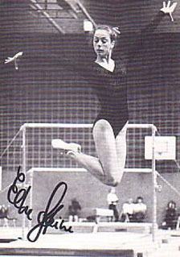

Elke Heine (FRG)
1984 DTB Cup B Gold Medalist

Elke was born on January 9, 1967.
Competition Results
1982
FRG-BUL Dual Meet: 2nd Team, 8th AA
FRG-HUN-SUI Meet: 1st Team, 2nd AA
HUN-FRG Dual Meet: 2nd Team, 9th AA
Jr. European Championships: 17th AA
1983
World Championships: 8th Team
1984
American Cup: 5th AA
Brazil Cup: 2nd AA
DTB Cup: 6th AA, 1st B
FRB-BUL-SUI Meet: 2nd Team, 5th AA
FRG Championships: 2nd AA
FRG-ROM-HUN Meet: 2nd Team, 3rd AA
Olympic Games: 4th Team, 36th AA
Ontario Cup: 9th AA
1985
Cottbus International: 7th AA, 7th FX
European Championships: 17th AA
This page was created on September
09, 2006 and was last updated on February 28, 2021.
© Gymn Forum